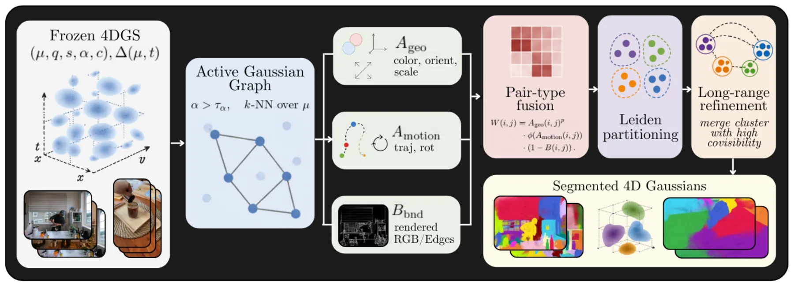
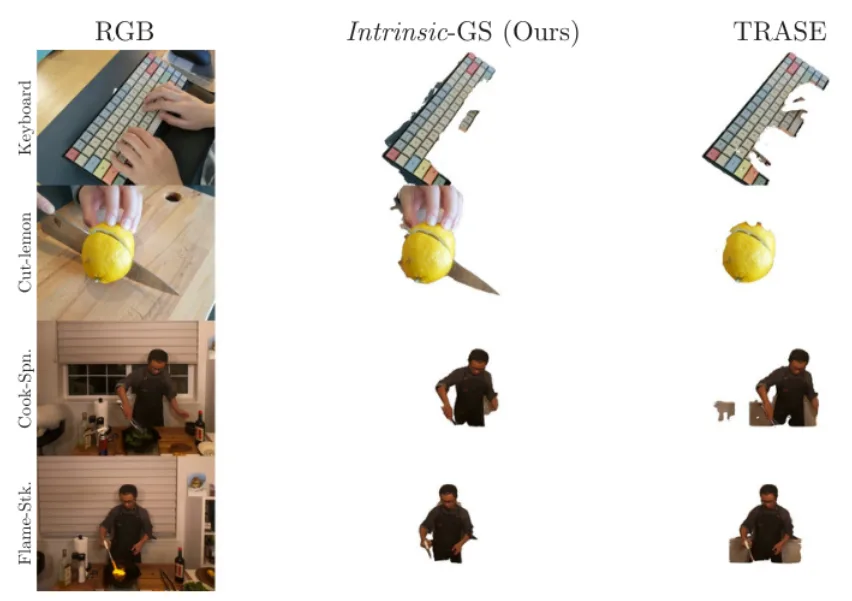
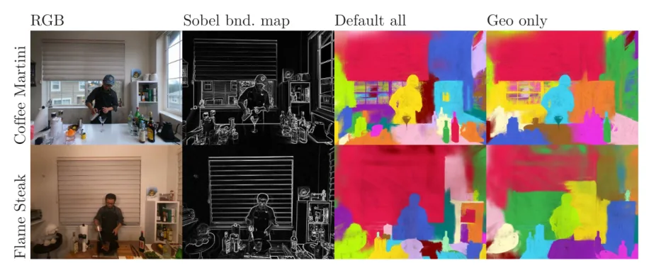
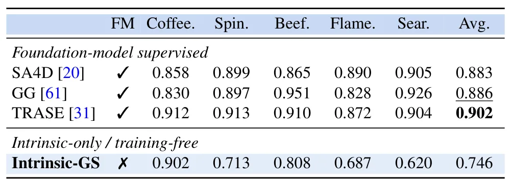
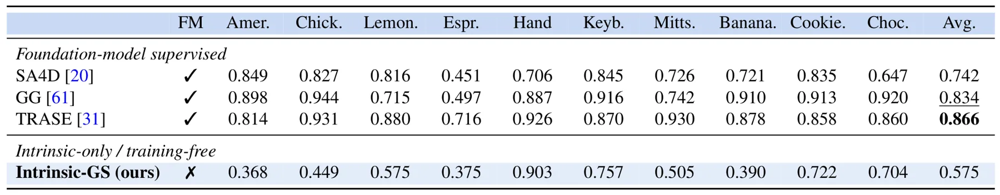
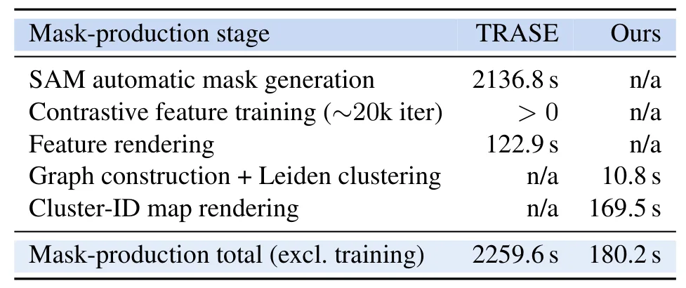
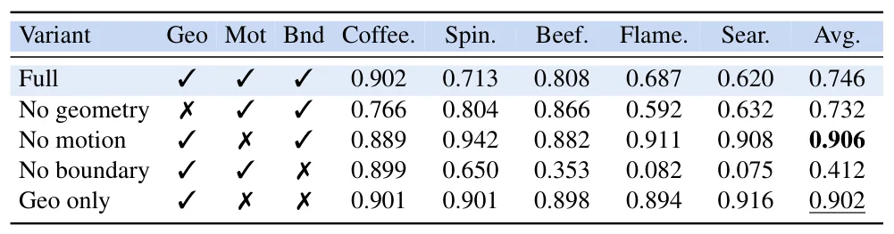
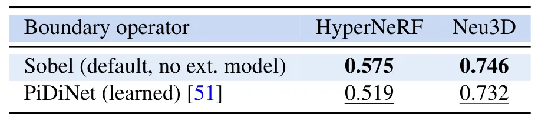
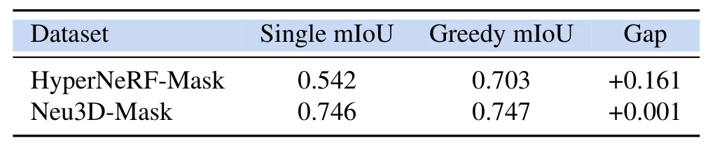

Intrinsic-GS：从场景内在线索进行 4D Gaussian 分割Intrinsic 4D Gaussian Segmentation from Scene Cues
与 3DGS/4DGS 动态场景表示、实例级地图维护和动态物体处理高度相关；对 3DGS-SLAM 后处理和语义/对象级建图有较高跟踪价值。
一句话工作总结
Intrinsic-GS 直接利用 4D Gaussian primitives 的外观、几何、形变轨迹和渲染边界建立图并聚类，实现无需外部 mask 的动态场景分割。
摘要
动态 4D Gaussian Splatting 能高保真重建形变场景，并越来越常作为动态三维场景表示。要对这些场景进行编辑、操作或运动分析，首先需要把 Gaussian primitives 分组成一致对象。现有流程常从 SAM 等基础模型生成 2D mask，再提升或蒸馏到 Gaussian 表示中，但动态场景下需要跨多帧多视角生成 mask，成本高且结果依赖外部 mask 质量。本文提出 Intrinsic-GS，一种无需训练、无需 mask 的方法，直接从 Gaussian primitives 的外观、朝向、尺度、形变轨迹以及非学习的渲染边界线索构建稀疏 affinity graph，并用 Leiden community detection 分割。其在 Neu3D 与 HyperNeRF 基准上无需 mask supervision 即恢复大量对象结构，在 Neu3D 上 geometry-only 变体达到 0.902 mIoU，在 HyperNeRF 上比 mask-supervised 流程中的 mask 生成与特征渲染阶段快 12.5 倍。
Dynamic 4D Gaussian Splatting reconstructs deforming scenes with high fidelity and is increasingly adopted as a representation for dynamic 3D scenes. Putting such a scene to use, for editing, manipulation or motion analysis, first requires segmenting it: grouping the Gaussian primitives into coherent objects. Current pipelines obtain this grouping by importing 2D masks from foundation models such as SAM and lifting or distilling them into the Gaussian representation. In dynamic scenes these masks must be generated across many frames and views, which is costly, and the resulting segmentation can depend strongly on the quality and consistency of those external masks. We ask how much object-level structure can instead be recovered from the Gaussians themselves, and propose Intrinsic-GS, a training-free, mask-free method that builds a sparse affinity graph over Gaussian primitives from appearance, orientation, scale, deformation-trajectory and non-learned rendered-boundary cues. The graph is partitioned with Leiden community detection, requiring no foundation model and no learned feature field. On the standard 4D Gaussian segmentation benchmarks, Neu3D and HyperNeRF, Intrinsic-GS recovers substantial object structure without mask supervision, reaching 0.746 mIoU on Neu3D and 0.575 on HyperNeRF; on Neu3D, a geometry-only variant reaches 0.902 mIoU, matching SAM-supervised TRASE. On HyperNeRF, Intrinsic-GS runs 12.5x faster than the mask-generation and feature-rendering stages used by mask-supervised pipelines. These results suggest that much of the segmentation signal is already encoded in the Gaussians themselves, offering a fast, mask-free direction for 3D and 4D Gaussian segmentation that may also point toward more generalizable, robust segmentation in settings where external masks are unreliable or expensive.
中文解读摘录
- 链接：abs / PDF；作者：Hasan Yazar, Mohamed Rayan Barhdadi, Erchin Serpedin, Mehmet Tuncel, Hasan Kurban；类别：cs.CV, eess.IV；采集 score=9。
- 核心思路：提出 Intrinsic-GS，不用 SAM 等外部 2D mask，也不训练新特征场，而是直接从 4D Gaussian primitives 的外观、朝向、尺度、形变轨迹和渲染边界线索构造稀疏 affinity graph，并用 Leiden community detection 分割动态场景。
- 方法要点：在 Neu3D / HyperNeRF 分割基准上取得可观 mIoU；在 HyperNeRF 上相对 mask-supervised 流程的 mask 生成与 feature rendering 阶段快 12.5 倍。
- 关注点：适合 3DGS-SLAM/动态场景建图方向跟踪，尤其是“地图 primitives 自带的物体结构信号”是否能用于动态物体剔除、实例级地图维护和长期场景编辑。
图表/页面预览

{kind=link}

{kind=link}

{kind=link}

{kind=link}

{kind=link}

{kind=link}

{kind=link}

{kind=link}

{kind=link}
